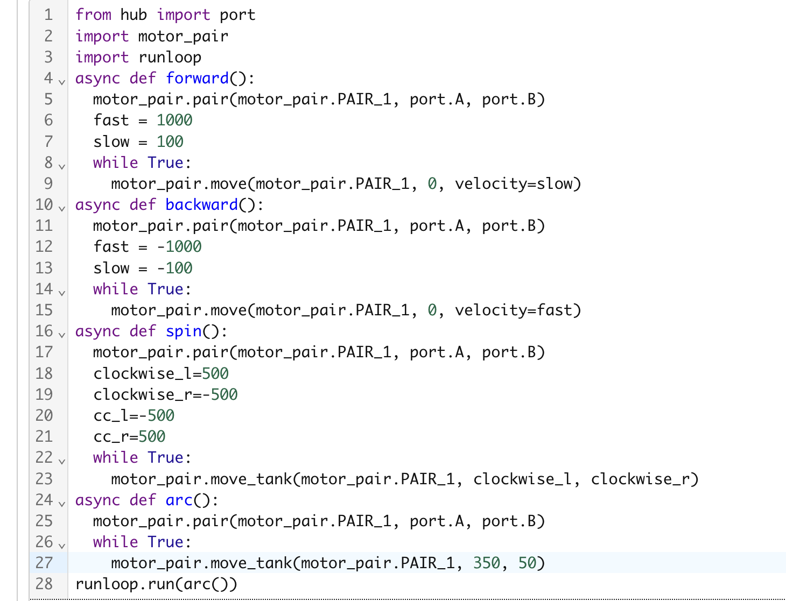

Project Portfolio



In this project we used our Spike Prime kit to make a simple car to get used to motor_pair functions. We had to make it drive both forward and backward, slow and fast, we had to make it spin in place both clockwise and counter clockwise, and we had to make it go in both a small and large arc.